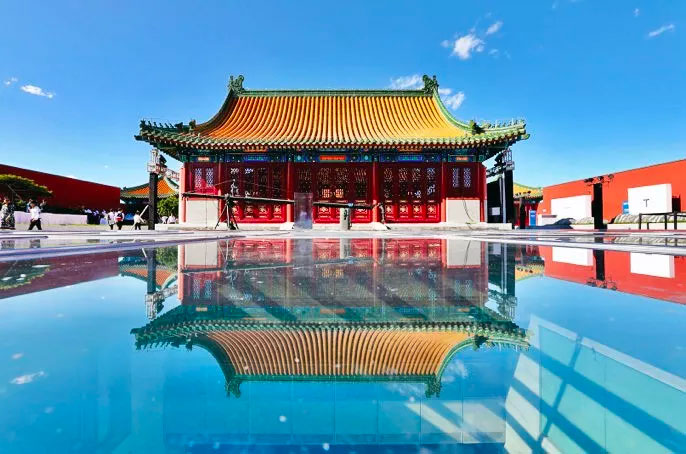
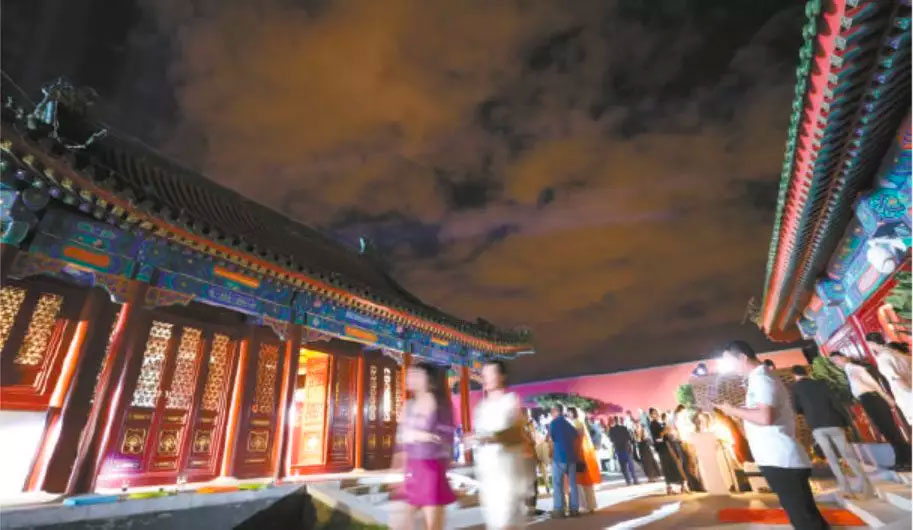
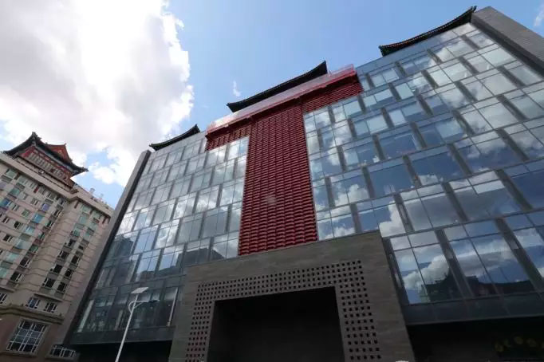

位置：首页 > 新闻
隆福寺蝶变 铸老城复兴金名片
来源：北京东城
昨晚（8月29日），有着600年历史的隆福寺地区再次成为北京的焦点。位于隆福大厦顶层，面积达6000平方米的隆福文化中心首次开放，举办了英国著名艺术家大卫·霍克尼在华首次大型个展。
晴朗夜空下、朗朗指尖流淌的琴声中，四座仿古大殿和三个室外庭院让人忘却这是距离地面45.59米的半空中。绕着略带禅意的文化中心露台一周，可以眺望到故宫、中国美术馆、中国尊、奥林匹克塔等或近或远的北京地标建筑。俯视，占地约9.5万平方米的隆福寺四合院风貌区带着烟火气在柔和的灯光中即将进入梦乡。
自2012年北京国资公司与东城区委区政府联手实施对隆福寺地区的风貌保护和城市更新以来，国资公司聘请境内外知名专家和规划设计团队反复规划论证，如今隆福寺项目一期终于蝶变为融合了城市书房、美术馆、艺术社区、文化中心、特色餐饮、共享办公
整个隆福寺项目地处东城区东四片区，北至钱粮胡同、南至东四西大街、西至美术馆东街、东至东四北大街，占地面积约15.5公顷，包含隆福大厦、隆福广场、长虹影城等著名建筑，以及建设于上世纪60年代至90年代的多个办公附属设施和相邻的胡同风貌区。
关闭当前页